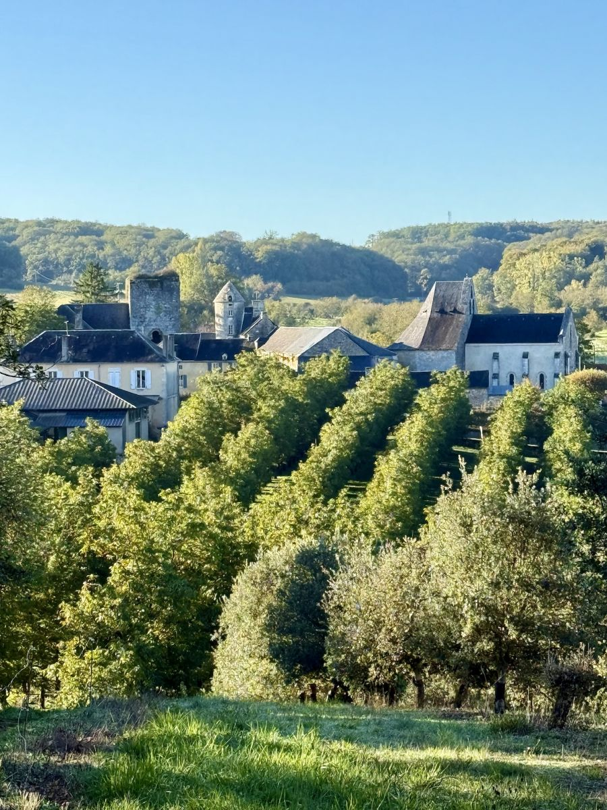
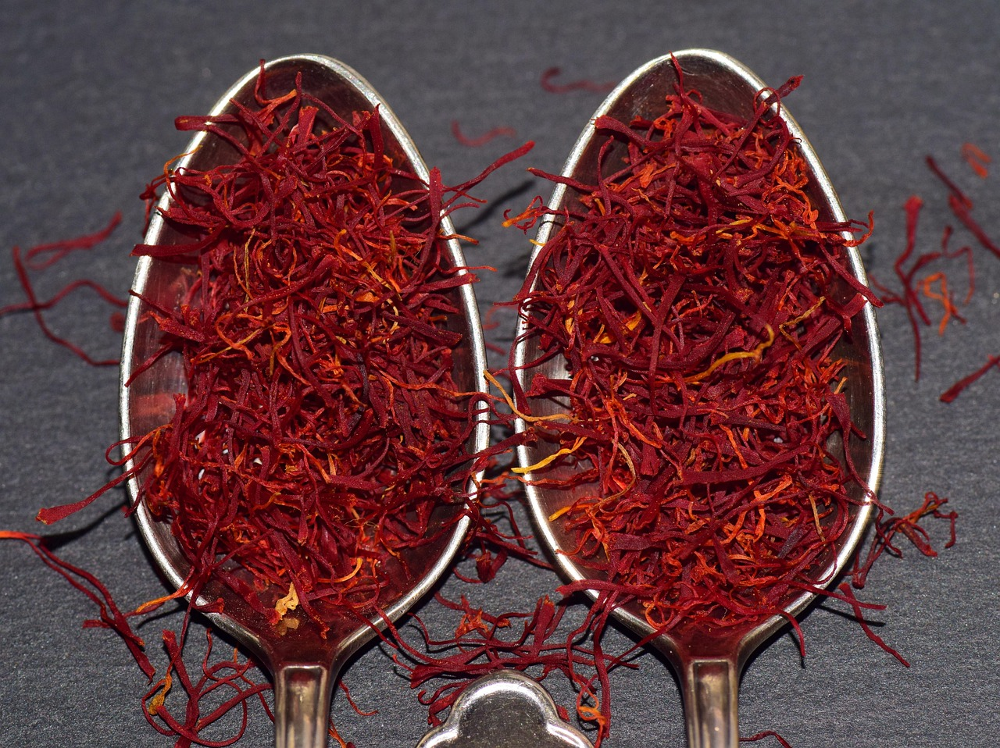
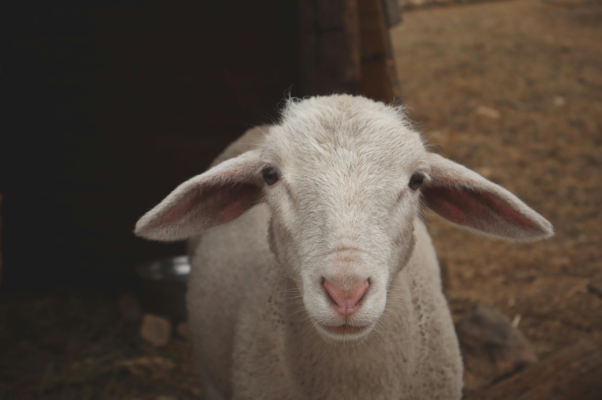
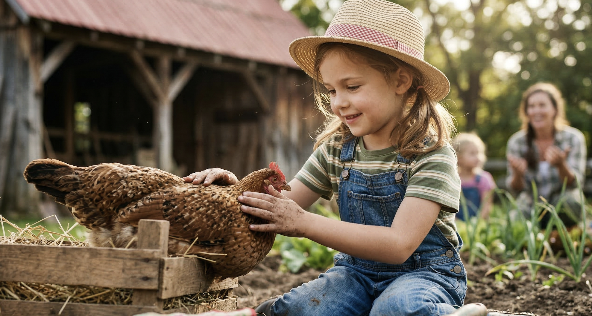
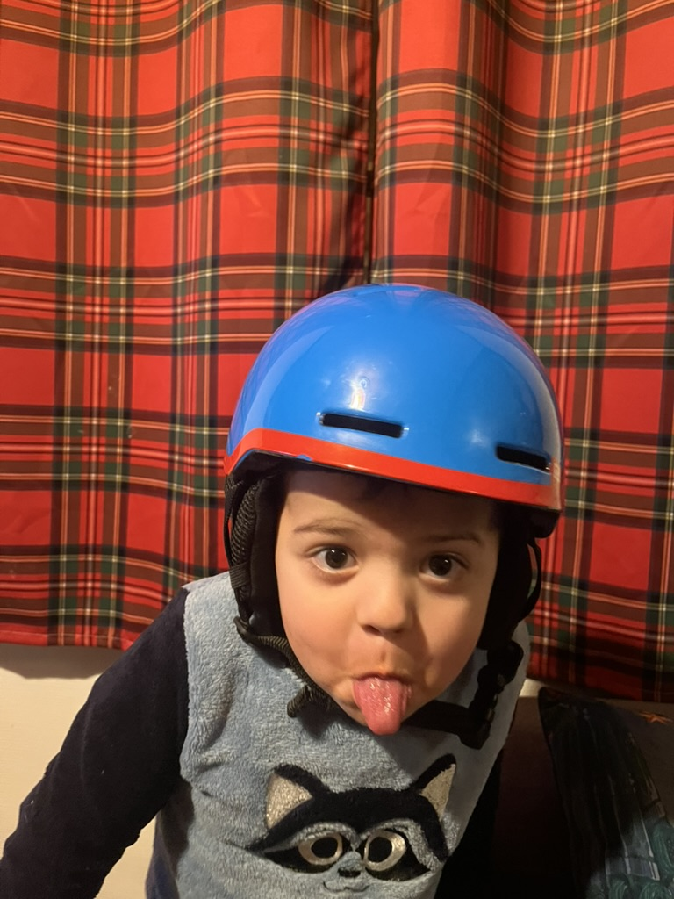
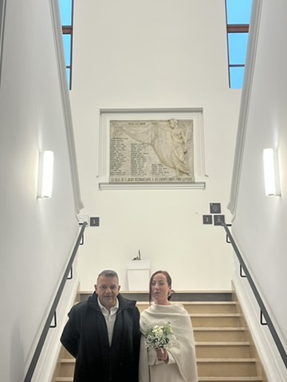
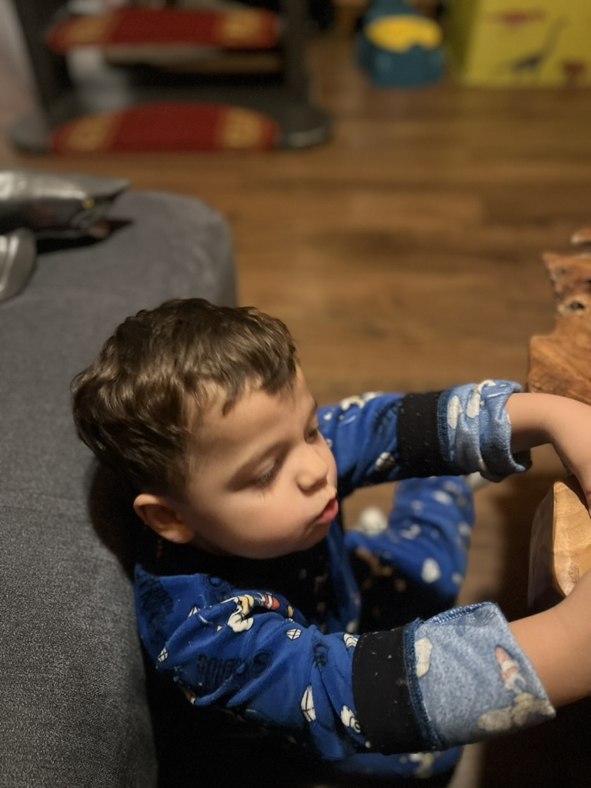

Fénelon
Ferme pédagogique, ateliers nature et activités éducatives pour tous.

La mission de notre ferme est de reconnecter petits et grands aux fondamentaux en offrant une immersion authentique au cœur du vivant et du cycle des saisons. Nous transmettons les gestes simples de la terre pour cultiver le respect de la nature et le goût des produits vrais.
Nos valeurs : partage, respect de l’environnement, apprentissage pratique et engagement communautaire.

À Jayac, l'assiette célèbre l'union de la truffe noire du Périgord, aux arômes de sous-bois puissants, et du safran local qui apporte ses notes de miel et de foin. Ces produits d'exception subliment les recettes paysannes, transformant une simple omelette aux truffes ou un dessert safrané en une expérience gastronomique raffinée.

Notre ferme abrite un conservatoire unique dédié aux races miniatures et de petite taille, véritables trésors de biodiversité souvent méconnus. C'est un projet de cœur qui permet aux plus petits de créer un lien direct et rassurant avec l'animal, tout en apprenant l'importance de préserver ces lignées rares.

Aimer les animaux, c'est d'abord apprendre à les connaître. Nous organisons des ateliers d'immersion où l'observation et le soin quotidien permettent de comprendre le rythme du vivant et l'importance de chaque espèce dans notre environnement.



Samedi 20 mars 2026
Découverte des techniques de permaculture pour enfants et adultes.
Dimanche 4 avril 2026
Visite de la ferme et rencontre des animaux.
Samedi 10 mai 2026
Vente de légumes et produits locaux.
Bénévolat, visites et ateliers pour tous.